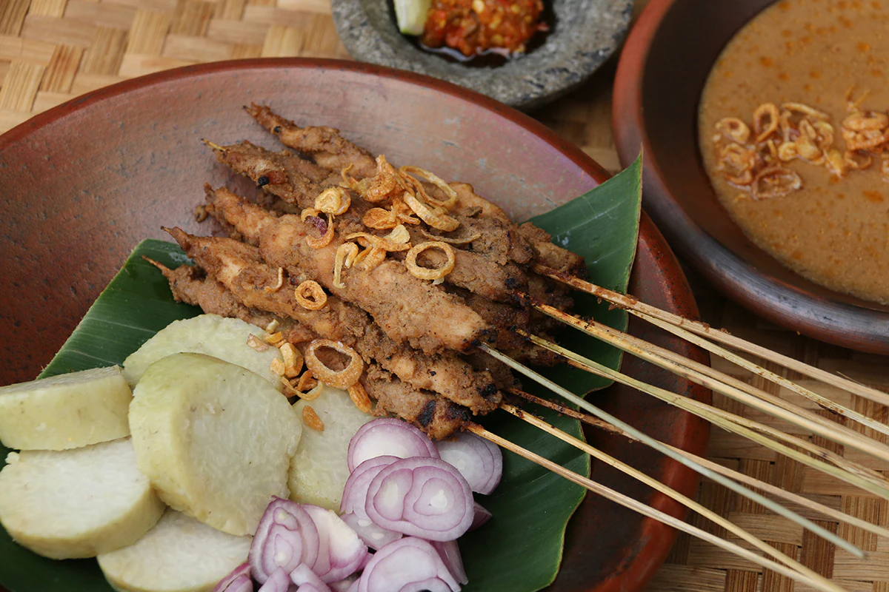

The last traditional dish that is so easy to find in Indonesia is Sate Ayam, a grilled chicken skewer served with peanut sauce. It is believed that the word ‘Sate’ originated from Tamil ‘catai’, a regional variant of ‘tacai’ meaning ‘flesh’, which is the indication that the dish was initially developed by Javanese street vendors as an adaptation of Indian kebabs. In West Sumatra, there is a popular variant of Sate Ayam dish called Sate Padang, a grilled beef skewer served with a distinctive spicy Minang sauce.
Sate Ayam is very easy to make and you can find all the ingredients at your local store.
A little patience and diligence is required to cook this dish, but you can find all the ingredients at your nearest Asian markets. This one-of-a-kind dish will put your skills to a test.
Mix the chicken thighs, 3/4 teaspoon of salt, white pepper, and sunflower seed oil in a large bowl, then cover and refrigerate for 1-2 hours. Make preparations to grill and soak the wooden skewers in water so they don’t burn during cooking. Blend water, peanut butter, sweet soy sauce, brown sugar, garlic, and 1/2 teaspoon salt in a small saucepan and bring to a boil. Stir well. Remove from heat and add some lime juice. Thread the marinated chicken onto the skewers and put three pieces of meat per stick. Put the well-blended peanut sauce in a small bowl and set aside. Then brush the sauce over the chicken. Heat a grill pan or a large skillet and put the chicken skewers in batches on the pan or the skillet. Cook until the chicken meat turns brown, approximately 1 to 2 minutes per side. Serve warm.
Have you decided which dishes you want to try out while you stay at home? Don’t worry. For now, get a taste of Indonesia at home and prepare yourself to discover these delicious foods around the archipelago once things get better.